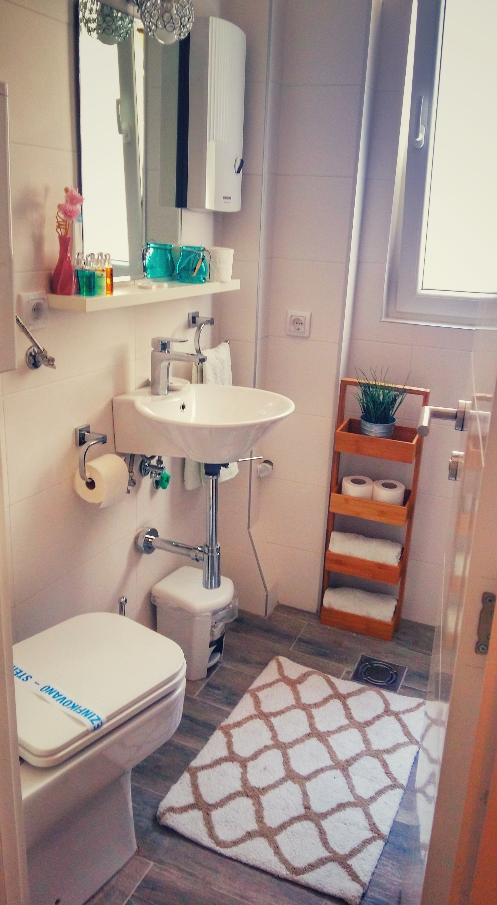
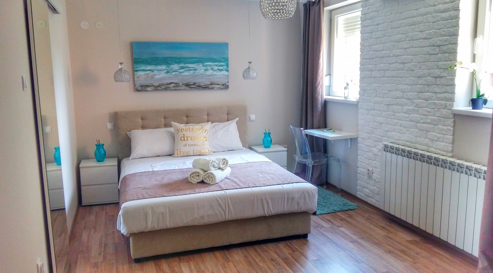
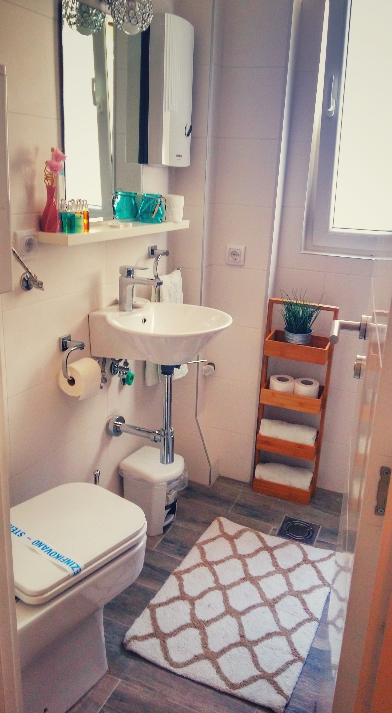
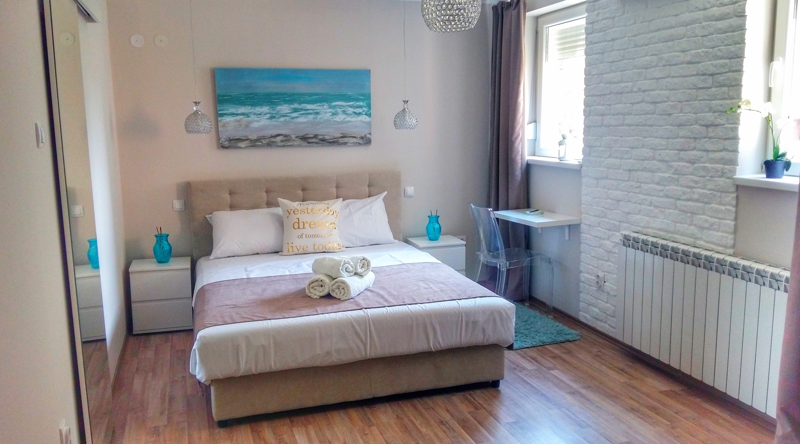

Cherry Queen Apartment
A blend of comfort and a perfect location.
The Cherry Queen Apartment is located in Vračar, just a one-minute walk from the Church of Saint Sava. With its elegant yet cozy interior, it is the ideal place for a comfortable stay in Belgrade, whether you are visiting for business or leisure.
Its location is perfect for exploring Belgrade. There are numerous cafés, shops, and restaurants nearby where guests can enjoy authentic local food and drinks. The airport bus terminal and public transport stops are just a two-minute walk away. Although centrally located, the apartment faces the courtyard, allowing guests to relax in peace and quiet.
The apartment is 25m2, located on the fourth floor of a residential building, and can accommodate up to three people. It offers Wi-Fi, air conditioning, TV and a clothes iron. The kitchen is fully equipped for guests who prefer to prepare their own meals. Towels and bed linen are provided. The bathroom includes a shower, hairdryer, and toiletries. Private parking is available upon reservation. Airport transfers can also be arranged on request.
Why choose Cherry Queen?
Our apartment offers comfortable accommodation in the very heart of the city — perfect for both relaxation and business trips.
 




What our guests had to say

„Great internet connection, and our Host kindly offered us any help and airport transfer.“
- Alex, UK
„Apartment was sparkling clean, the host was easy going, AC worked perfectly“
- Sonia, Slovakia
„Amazing location! Hram Svetog Save is walking distance. Super clean and Danijela was very responsive whenever I had a question.“
- Sonja, Canada
Based on 60+ reviews
Based on 50+ reviews
How to reach us
© 2025 Cherry Queen Apartment | Kneginje Zorke 18, Belgrade